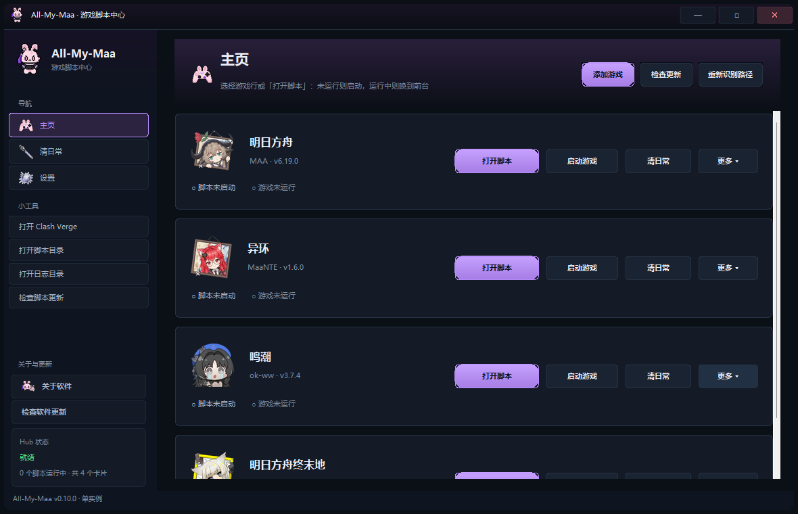
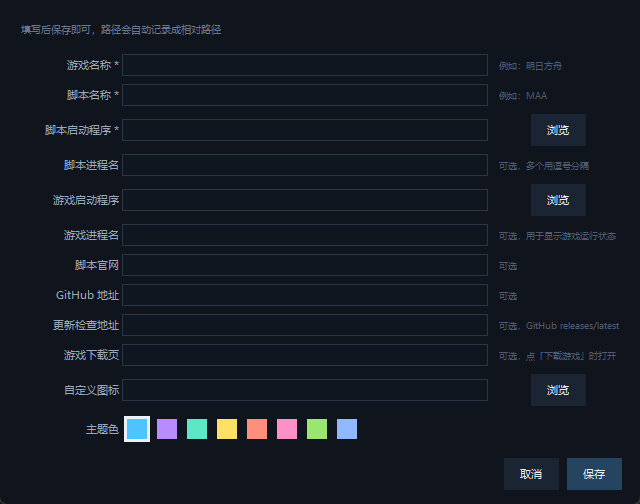

按钮式启动
主页每个游戏一行：未运行「打开脚本」、运行中「唤到前台」；自绘圆角按钮 5 态（默认 / 悬停 / 按下 / 禁用 / 主按钮），点图标 / 名称同样生效。
Windows 桌面启动器 · v0.13.0
把明日方舟、异环、鸣潮、明日方舟终末地……所有游戏脚本，收进同一个窗口。
v0.13.0：4 款游戏、5 个内置脚本卡片，保留圆润淡紫渐变界面、自绘标题栏与 4 档字体大小。异环支持 MaaNTE / ok-nte 两张独立卡片：MaaNTE 保持正常 UI + Ctrl+F10 + 本地 HTTP/日志等待流程；ok-nte 与 ok-ww 一样直接启动 PyAppify 正式脚本。新增结构化运行日志、手动导出 Hub 日志 ZIP 与问题反馈；关闭始终先选择任务栏 / 托盘 / 退出 / 取消，默认管理员启动（可跳过提权）。
Windows 10 / 11·默认管理员启动（可跳过提权）·使用 exe 时无需安装 Python 与 Pillow·MIT License

Features
圆润淡紫渐变、自绘可拖动标题栏与 4 档字体大小；侧栏三页加小工具与自动更新，启动游戏按各脚本自身方式执行。
主页每个游戏一行：未运行「打开脚本」、运行中「唤到前台」；自绘圆角按钮 5 态（默认 / 悬停 / 按下 / 禁用 / 主按钮），点图标 / 名称同样生效。
按各脚本自身方式启动：鸣潮直启 Wuthering Waves.exe、异环启动 NTELauncher（登录后点开始游戏）、终末地走鹰角启动器等待、MAA 分 PC / 模拟器；启动后等待窗口并自动回退。
行内「更多 ▾」→「游戏下载页」直达官方下载页，也可以在编辑里改成任意链接。
编辑卡片或启动游戏时，自动扫描注册表卸载项与常见安装目录，按匹配度列出候选（名称 + 路径 + 来源）一键填入。
顶部「添加游戏」填写名称、脚本路径、游戏路径、官网 / 下载链接与主题色即可生成游戏行，无需改代码。
启动时自动检查脚本与 Hub 版本；可选「自动下载更新」（安装前仍确认）。打包版替换 exe 后重启、源码模式 git pull，失败自动降级到发布页。
侧栏一键打开 Clash Verge / 脚本目录 / 日志目录；「检查脚本更新」一键检查所有游戏脚本的最新版本。
配置优先 → 自动扫描脚本目录 → 预期位置。脚本升级换目录后，点「重新识别路径」一键重扫。
路径保存为相对路径，整个文件夹换电脑、换盘符后仍然可用；配置只存在本地。
复用各脚本自己的判断方法：一次窗口快照 + 窗口类 / 标题正则 + 进程（路径收窄，可降级），可选 ADB。启动器与云游戏只显示文案，不会再被误报成「运行中」；MaaNTE / MaaEnd 的规则直接读各自 interface.json，脚本更新自动跟随。
清日常页勾选要跑的游戏，按自定义顺序串行执行；每行有自己的「开始清日常 / 停止」按钮与独立状态。任务用各脚本自己已配置好的：ok-ww -t DailyTask -e、ok-nte -t DailyRoutineTask -e、MAA LinkStart 热键；终末地 MaaEnd 走 --autostart --instance ... --quit-after-run（完成 = 进程退出）。异环 MaaNTE 保持原有流程：打开正常 UI，等主窗口就绪并置前后发送「开始任务」全局热键（默认 Ctrl+F10），轮询本地 HTTP /maa/state（默认 12701），HTTP 不可用 10 秒后回退 debug 日志等待结束；完成后保留窗口，不使用 autostart 或启动器等待。
前置：先在脚本里预设好日常任务；MAA 需勾选任务队列并配置 LinkStart 热键；MaaNTE / MaaEnd 需建好 MXU 实例并填写实例名，执行前先关闭已运行的对应脚本。MaaNTE 需启用「开始任务」全局热键；热键未启用、读不到或发送失败时提示手动点击并将该项记为失败，不静默算成功；停止 / 超时才结束本次启动的 MaaNTE。ok-nte 默认不勾选，建议同一队列只选择一个异环脚本。外层任务结束不代表每个内部日常项目都成功，请核对脚本任务报告；本页不代表已验证真实日常任务。勾选与顺序保存在 config.json，自动化存在账号风险，请自行评估。
圆润淡紫渐变主题：默认强调色淡紫 #b98bff，标题栏 / 侧栏 / 面板深色淡紫渐变，更圆润的面板 / 按钮 / 输入框。隐藏原生标题栏后自绘渐变标题栏（品牌图标 + 标题 + 最小化 / 最大化 / 关闭），可拖动、双击最大化、8 向边缘 / 角落缩放，并保留任务栏 / Alt+Tab 与 Windows 圆角；设置里可选 小 / 标准 / 大 / 特大 四档字体，保存立即生效；v0.11.0 起支持最小化到系统托盘；v0.13.0 中标题栏「—」仍按托盘开关最小化，关闭开关时最小化到任务栏。点「✕」始终先弹出「最小化到任务栏 / 最小化到托盘 / 退出 / 取消」四项选择，不由旧关闭行为设置绕过；清日常执行中退出会先请求停止并等待结束。托盘左键恢复、右键菜单打开 / 退出；窗口隐藏时禁用托盘会先恢复主窗口。
自动更新：启动时检查脚本与 Hub 版本；可自动下载更新（安装前确认）。打包版替换 exe 后重启，源码模式 git pull，网络或权限失败时降级为打开发布页。
Supported Scripts
异环 MaaNTE 与 ok-nte 独立并存，不替换原卡片；也可继续可视化添加自定义游戏。
卡片 key：maa。支持 PC / 模拟器启动；清日常使用已配置的任务队列与 LinkStart 热键。
原卡片 nte 保持正常 UI → 开始任务全局热键（默认 Ctrl+F10）→ 本地 HTTP / debug 日志等待结束，完成后保留窗口；详细前置与失败处理见上方「一键清日常」。
第五张内置卡片 oknte，与 ok-ww 共用 direct-PyAppify 机制：直接运行随包 data\apps\ok-nte\python\pythonw.exe + data\apps\ok-nte\working\main.py，工作目录为 working；「更新」仍打开 ok-nte.exe。按随包 Python 完整路径区分进程，避免与 ok-ww 混淆。
清日常使用 -t DailyRoutineTask -e，不是 DailyTask；默认不勾选，建议同一队列只选一个异环脚本。两张异环卡片均通过 NTELauncher.exe 启动游戏，登录后点「开始游戏」，不直启 HTGame.exe。
卡片 wuwa 直接运行随包 Python + working\main.py，不只打开 PyAppify 启动器；「更新」走 ok-ww.exe。清日常使用 -t DailyTask -e。
卡片 maaend 使用 MXU 已配置实例，清日常走 --autostart --instance ... --quit-after-run，以进程退出判定外层结束；请自行核对脚本任务结果。
Feedback & Logs
侧栏「问题反馈 / Bug」、设置页或关于窗口均可打开表单；支持预览、复制报告及打开 GitHub Issues。
GitHub Issue 公开可见且需要登录；打开浏览器前会提醒，最终仍需你确认提交，程序不会自动发布。过长报告会复制完整内容供粘贴，离线时可先复制保存。版本诊断信息可选附带，手动填写的文字也请检查隐私。
记录启动、UAC、异常、脚本 / 游戏启动结果与清日常阶段，包含时间戳、PID 和会话关联信息。默认保存在 APP_DIR/logs/hub.log，单文件最大 2 MB、保留 4 份轮转备份；目录不可写时回退到 %LOCALAPPDATA%/All-My-Maa/logs。小工具可打开当前日志目录。
主动点击反馈窗口「导出日志 ZIP」并选择位置，只打包 Hub 自身日志，不包含游戏脚本日志或配置，不自动读取账号或环境变量作为附件。导出仅生成本地文件，不自动上传或附加到 GitHub；检查后由你手动附加 ZIP 并提交，不导出也可提交文字反馈。
日志会对敏感字段 / 密钥和个人路径脱敏，但不保证完全匿名。异常文本、自定义内容或未知格式仍可能泄露信息，分享前请自行检查；Hub 日志不能替代各脚本任务报告。
Interface
圆润淡紫渐变主题、自绘渐变标题栏与 4 档字体大小；窗口可拖动 / 8 向缩放 / 最大化，支持最小化到托盘，启动游戏按脚本自身方式执行。

设置页可切换 8 种淡紫系强调色，导航高亮与 5 态主按钮随之变化。
Download
推荐下载打包好的 GameHub.exe：目标电脑不需要安装 Python 和 Pillow。
单文件免安装版，适用于 Windows 10 / 11（x64）。每次打版本标签时由 GitHub Actions 自动构建并发布。
下载 GameHub.exe下载仓库源码自行运行或打包。需要 Python 3.10+（本机开发环境 3.13）与 Pillow。
python -m pip install pillow python hub.pyw下载 main 分支源码 zip
历史版本与发布说明见 Releases 页面，版本号以该页面为准。
Get Started
不需要安装 Python（使用 exe 时），也不需要改动任何脚本文件。
从 Releases 下载 GameHub.exe，或下载源码 zip 后用 Python 运行。
解压到脚本所在目录旁，例如 D:\All MAA\GameHub。
运行 启动游戏中心.bat；需要桌面图标就运行 创建桌面快捷方式.bat。
点「添加游戏」填写脚本路径与链接；行内「更多 ▾」可以编辑卡片。
脚本目录名不需要固定：Hub 会在自己所在目录按 exe 文件名自动查找 MAA.exe / MaaNTE.exe / ok-nte.exe / ok-ww.exe / MaaEnd.exe，版本号目录名变了也能找到。
D:\All MAA\ ├─ GameHub\ ← 本程序 ├─ MAA-v6.19.0-win-x64\ ├─ MaaNTE\ ├─ ok-nte\ ← 异环另一脚本，与 MaaNTE 并存 ├─ WuwaMAA\ok-ww\ └─ MaaEnd-win-x86_64-v2.33.0\